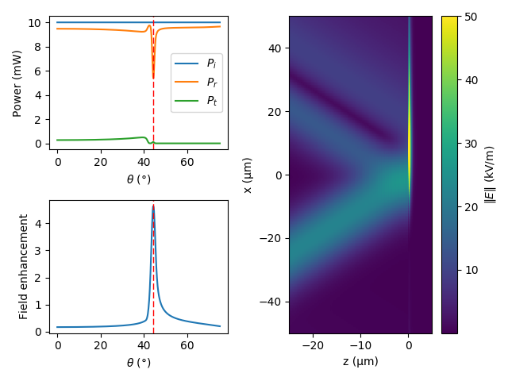

Getting started¶
Installation¶
Installation of NonlinearTMM package is possible through pip or from source code.
Requirements:
Dependencies:
C++ code depends on Eigen library (already included in package)
Installation through pip is done like:
pip install NonlinearTMM
Alternatively, it is possible to install the package form the source code by
pip install .
in the source code folder.
Package structure¶
The package has three main classes:
MaterialTMMSecondOrderNLTMM
Class Material is responsible to represent the properties of optical
material. Mainly wavelength dependent refractive indices and second-order
suceptibility tensor for nonlinear processes.
Class TMM (alias of NonlinearTMM) is has all the standard TMM features:
Both p- and s-polarization
Arbritarty angle of incidence
Calculation of reflection, transmission and absorption of plane waves (
GetIntensitiesandGetAbsorbedIntensity)Calculaion of electric and magnetic fields inside structure (
GetFieldsandGetFields2D)Calculation of field enhancement (
GetEnhancement)Sweep over any parameter (
Sweep)
In addition to those standard features, the class has similar functionality to
work with waves with arbritarty profile (e.g. Gaussian beam). The configuration
of the beam is done through attribute wave (see class _Wave).
The interface for the calculations with arbritarty beams is similar to standard TMM:
Calculation of reflection, transmission and absorption of beams (
WaveGetPowerFlows)Calculaion of electric and magnetic fields inside structure (
WaveGetFields2D)Calculation of field enhancement (
WaveGetEnhancement)Sweep over any parameter (
WaveSweep)
Finally, SecondOrderNLTMM class ic capable of calculating second-order
nonlinear processes like second-harmonic generation, sum-frequency generation and
difference frequency generation. This has similar interface as TMM - it
supports both the plane waves and beams.
Standard TMM¶
Plane waves example¶
As an example three layer structure consisting of a prism (z < 0), 50 nm thick silver film and air is studied. Such kind of structure supports surface plasmon resonance (SPP) if excited by p-polarized light and is named Kretschmann configuration. The example code is shown bellow and could be divided into following steps:
Specifying materials refractive indices.
Initializing
TMM, setting params and adding layers.By using
Sweepcalculate the dependence of reflection, transmission and enhancment factor on the angle of incidence.Find the plasmonic resonance by maximum enhancment.
Calculate 1D fields at plasmonic resonance by
GetFields.Calculate 2D fields at plasmonic resonance by
GetFields2D.Plot all results
import numpy as np
import pylab as plt
from NonlinearTMM import TMM, Material
def CalcSpp():
# Parameters
#---------------------------------------------------------------------------
wl = 532e-9 # Wavelength
pol = "p" # Polarization
I0 = 1.0 # Intensity of incident wave
metalD = 50e-9 # Metal film thickness
enhLayer = 2 # Measure enhancment in the last layer
ths = np.radians(np.linspace(0.0, 80.0, 500)) # Angle of incidences
xs = np.linspace(-2e-6, 2e-6, 200) # Field calculation coordinates
zs = np.linspace(-2e-6, 2e-6, 201) # Field calculation coordinates
# Specify materials
#---------------------------------------------------------------------------
prism = Material.Static(1.5)
ag = Material.Static(0.054007 + 3.4290j) # Johnson & Christie @ 532nm
dielectric = Material.Static(1.0)
# Init TMM
#---------------------------------------------------------------------------
tmm = TMM(wl = wl, pol = pol, I0 = I0)
tmm.AddLayer(float("inf"), prism)
tmm.AddLayer(metalD, ag)
tmm.AddLayer(float("inf"), dielectric)
# Solve
#---------------------------------------------------------------------------
# Calculate reflection, transmission and field enhancement
betas = np.sin(ths) * prism.GetN(wl).real
sweepRes = tmm.Sweep("beta", betas, outEnh = True, layerNr = enhLayer)
# Calculate fields at the reflection dip (excitation of SPPs)
betaMaxEnh = betas[np.argmax(sweepRes.enh)]
tmm.Solve(beta = betaMaxEnh)
# Calculate 1D fields
fields1D = tmm.GetFields(zs)
# Calculate 2D fields
fields2D = tmm.GetFields2D(zs, xs)
# Ploting
#---------------------------------------------------------------------------
plt.figure()
thMaxEnh = np.arcsin(betaMaxEnh / prism.GetN(wl).real)
# Reflection / transmission
plt.subplot(221)
plt.plot(np.degrees(ths), sweepRes.Ir, label = "R")
plt.plot(np.degrees(ths), sweepRes.It, label = "T")
plt.axvline(np.degrees(thMaxEnh), ls = "--", color = "red", lw = 1.0)
plt.xlabel(r"$\theta$ ($\degree$)")
plt.ylabel(r"Intensity (a.u)")
plt.legend()
# Field enhancement
plt.subplot(222)
plt.plot(np.degrees(ths), sweepRes.enh)
plt.axvline(np.degrees(thMaxEnh), ls = "--", color = "red", lw = 1.0)
plt.xlabel(r"$\theta$ ($\degree$)")
plt.ylabel(r"Field enhancement")
# Fields 1D
plt.subplot(223)
plt.plot(1e6 * zs, fields1D.E[:, 0].real, label = r"$E_x$")
plt.plot(1e6 * zs, fields1D.E[:, 2].real, label = r"$E_z$")
plt.plot(1e6 * zs, np.linalg.norm(fields1D.E, axis = 1), label = r"‖E‖")
plt.xlabel(r"z (μm)")
plt.ylabel(r"(V/m)")
plt.legend()
# Fields 2D
plt.subplot(224)
plt.pcolormesh(1e6 * zs, 1e6 * xs, fields2D.Ez.real.T, rasterized = True)
plt.xlabel(r"z (μm)")
plt.ylabel(r"x (μm)")
plt.colorbar(label = r"$E_z$ (V/m)")
plt.tight_layout()
plt.show()
if __name__ == "__main__":
CalcSpp()
The results of the calculations are shown bellow. Indeed there is a sharrp dip in the reflection (R) near the angle of incidence ca 44 degrees. At the same angle the field enhancement factor is maximum and is more than 12 times. In the second the results of the fields calculations at plasmonic resonance is presented. Indeed, surface wave on the silver-air interface is excited and characteristic pattern of fields for SPP is visible.

Gaussian wave example¶
Previous example was entirely about standard TMM. Now, the calculations are
extended to the beams, in this case Gaussian beam. The steps of the calculations
remain the same, except _Wave parameters must be set (TMM has
attribute TMM.wave). Gaussian beam power is set to 10 mW and waist size
to 10 μm.
import numpy as np
import pylab as plt
from NonlinearTMM import TMM, Material
def CalcSppGaussianBeam():
# Parameters
#---------------------------------------------------------------------------
wl = 532e-9 # Wavelength
pol = "p" # Polarization
I0 = 1.0 # Intensity of incident wave
metalD = 50e-9 # Metal film thickness
enhLayer = 2 # Measure enhancment in the last layer
ths = np.radians(np.linspace(0.0, 75.0, 500)) # Angle of incidences
xs = np.linspace(-50e-6, 50e-6, 200) # Field calculation coordinates
zs = np.linspace(-25e-6, 5e-6, 201) # Field calculation coordinates
waveType = "gaussian" # Wave type
pwr = 10e-3 # Beam power [W]
w0 = 10e-6 # Beam waist size
# Specify materials
#---------------------------------------------------------------------------
prism = Material.Static(1.5)
ag = Material.Static(0.054007 + 3.4290j) # Johnson & Christie @ 532nm
dielectric = Material.Static(1.0)
# Init TMM
#---------------------------------------------------------------------------
tmm = TMM(wl = wl, pol = pol, I0 = I0)
tmm.AddLayer(float("inf"), prism)
tmm.AddLayer(metalD, ag)
tmm.AddLayer(float("inf"), dielectric)
# Init wave params
tmm.wave.SetParams(waveType = waveType, w0 = w0, pwr = pwr, \
dynamicMaxX = False, maxX = xs[-1])
# Solve
#---------------------------------------------------------------------------
# Calculate reflection, transmission and field enhancement
betas = np.sin(ths) * prism.GetN(wl).real
sweepRes = tmm.WaveSweep("beta", betas, outEnh = True, layerNr = enhLayer)
# Calculate fields at the reflection dip (excitation of SPPs)
betaMaxEnh = betas[np.argmax(sweepRes.enh)]
tmm.Solve(beta = betaMaxEnh)
fields2D = tmm.WaveGetFields2D(zs, xs)
# Ploting
#---------------------------------------------------------------------------
plt.figure()
ax1 = plt.subplot2grid((2, 2), (0, 0))
ax2 = plt.subplot2grid((2, 2), (1, 0))
ax3 = plt.subplot2grid((2, 2), (0, 1), rowspan = 2)
thMaxEnh = np.arcsin(betaMaxEnh / prism.GetN(wl).real)
# Reflection / transmission
ax1.plot(np.degrees(ths), 1e3 * sweepRes.Pi, label = r"$P_i$")
ax1.plot(np.degrees(ths), 1e3 * sweepRes.Pr, label = r"$P_r$")
ax1.plot(np.degrees(ths), 1e3 * sweepRes.Pt, label = r"$P_t$")
ax1.axvline(np.degrees(thMaxEnh), ls = "--", color = "red", lw = 1.0)
ax1.set_xlabel(r"$\theta$ ($\degree$)")
ax1.set_ylabel(r"Power (mW)")
ax1.legend()
# Field enhancement
ax2.plot(np.degrees(ths), sweepRes.enh)
ax2.axvline(np.degrees(thMaxEnh), ls = "--", color = "red", lw = 1.0)
ax2.set_xlabel(r"$\theta$ ($\degree$)")
ax2.set_ylabel(r"Field enhancement")
# Fields 2D
cm = ax3.pcolormesh(1e6 * zs, 1e6 * xs, 1e-3 * fields2D.EN.real.T, vmax = 5e1)
ax3.set_xlabel(r"z (μm)")
ax3.set_ylabel(r"x (μm)")
plt.colorbar(cm, label = r"$‖E‖$ (kV/m)")
plt.tight_layout()
plt.show()
if __name__ == "__main__":
CalcSppGaussianBeam()
The results of those calculations are bellow. Despite the fact, that the structure is the same, the dip in the reflection is different. The reason for this behaviour is that as the resonances of SPPs are narrow, they also require well collimated beam to excite them. Also field enhancment is ca 3 times lower, as expected. On the right side, the electrical field norm is shown. It is clearly visible, that Gaussian beam is incident form the left, and it gets reflected from the metal film (z = 0). Part of the energy is transmitted to excite SPPs at the metal-air interface. The excited SPPs are propagating on the metal film and are absorbe after ca 20 μm of propagation.
Second-order nonlinear TMM¶
Plane waves example¶
Will be added in near future.
Gaussian wave example¶
Will be added in near future.